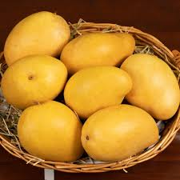
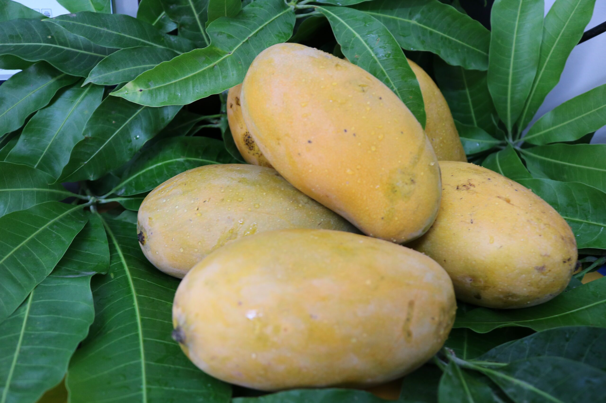
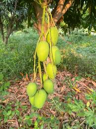
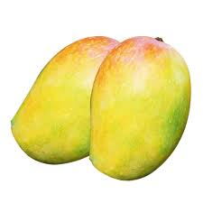

Fresh seasonal fruits from our farm to your table
We are a family-owned farm near Brisbane, committed to growing fresh, flavorful, and sustainable produce.
Order or Visit UsOur Premium Mango Varieties

Banginpally
Large, sweet, fiberless. The queen of mangoes.

Mallika
Rich, creamy, aromatic hybrid variety.

Dhaseri
Small, intensely sweet, perfect for snacking.

Kesar
Saffron-colored flesh, honey-like flavor.
Why choose Farm Fresh Fruits?
- Locally grown, minimal food miles.
- Picked fresh daily for maximum flavor.
- Sustainable farming practices.
- Friendly service and flexible orders.